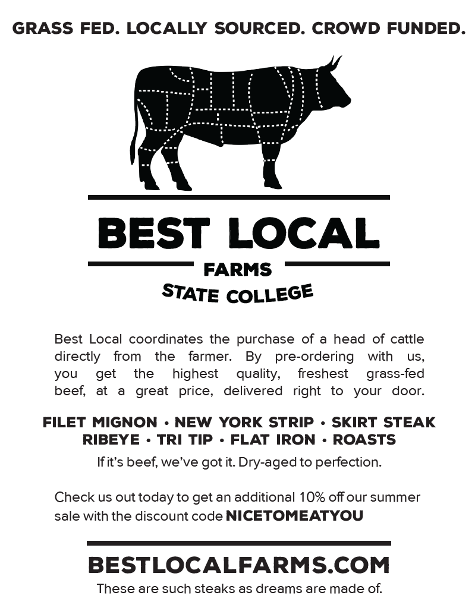
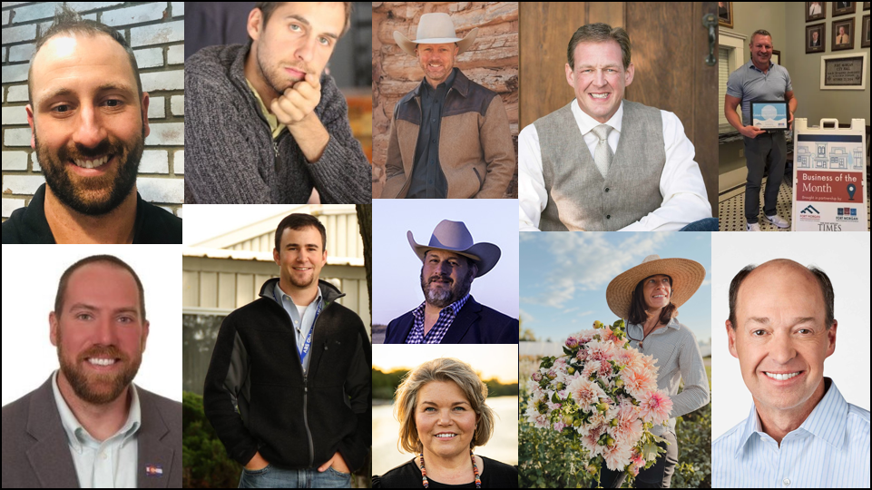
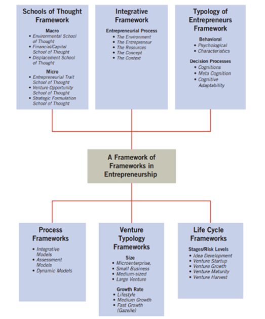

August 26, 2025
Hello! I’m Dr. Chenarides.
This is AREC 280-A1/224 Introduction to Agribusiness Entrepreneurship (3 credits).
We meet T & Th 8:00 am–9: 15 am.
I started my first business in 2016. 👉

Source: Kuratko (2024)
Guess before the number appears!
31 million
55%
25%
Guess before the number appears!
42
13 million (as of 2021)
35% (vs. 27% overall)
50%
This semester, you’ll be matched with an industry mentor. Read about the mentors here.

Small-Business Owners
Entrepreneurs
Decacorns and Hectacorns
New ventures can change the market structure by shifting supply or introducing entirely new supply curves, as well as generate demand.
This happens via:
Entrepreneurial Firms’ Economic Impact
Entrepreneurial firms make two indispensable contributions to an economy:
Entrepreneurship is more than the mere creation of business.
It is a mindset where one:
Entrepreneurship is an integrated concept that permeates an individual’s business in an innovative manner.
Becoming on entrepreneur is less about the money, the commitment, or the support and more about the mindset.
It revolves around shifting from an employee mindset to an entrepreneur mindset.
The more a person can change their mindset from employee to entrepreneur, the more they will be able to find satisfaction in entrepreneurship.
The Entrepreneurial Mindset Transformation
Entrepreneurship is more than just creating a business; it is an actual spiritual and emotional transformation that takes you from on established way of thinking to a new, groundbreaking mentality.
An entrepreneur must get comfortable with being uncomfortable and be able to deal with fear.
Entrepreneurship, in whatever capacity or form it shows itself in, is risky and fear inducing.
It does not matter if you are selling lemonade in your backyard as a kid, writing your first book, or hustling to market your brand after hours.
Source: E. Network (2017)
Entrepreneurship is…
Ingredients of Entrepreneurship
What does it take to be an entrepreneur?

A Framework-of-Frameworks Approach
This image from the textbook lays out a “Framework-of-Frameworks” — basically, it maps out how different schools of thought and process models fit into the larger study of entrepreneurship. You’ll see that it brings together both macro and micro perspectives:
On the macro side, it includes external influences like culture, capital access, and economic conditions (i.e., things outside the entrepreneur’s control).
On the micro side, it focuses on internal traits and strategic thinking—things like personal motivation, opportunity recognition, and business planning.
It also includes process-based approaches that look at how ventures are formed and evolve over time, emphasizing inputs (like team or resources) and outcomes (like growth or innovation).
Rather than detailing each school here, I encourage you to read the corresponding sections in the textbook. It’s helpful to reference when you start noticing how entrepreneurs are influenced by both their personal traits and their environment — and when we explore business cases later in the semester.
Source: Fortune Small Business, Fortune Magazine, and U.S. News & World Report (2007)